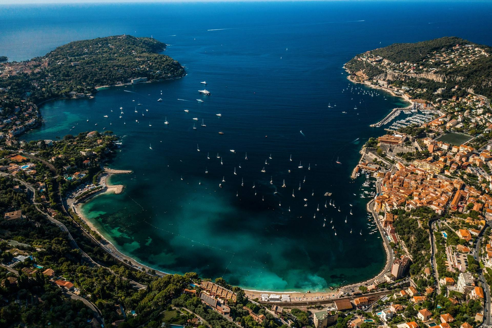
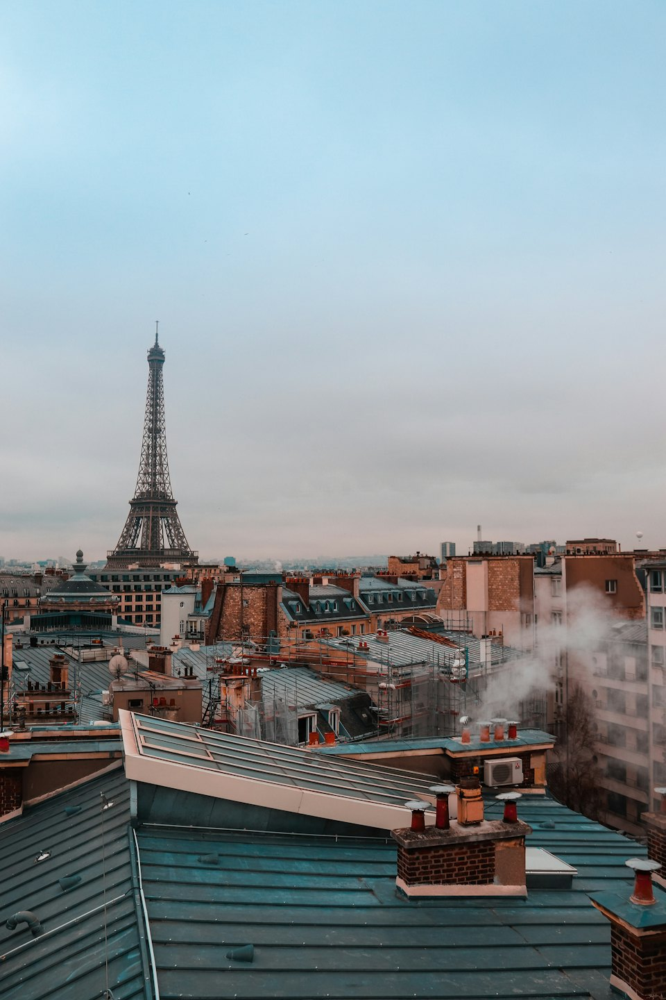
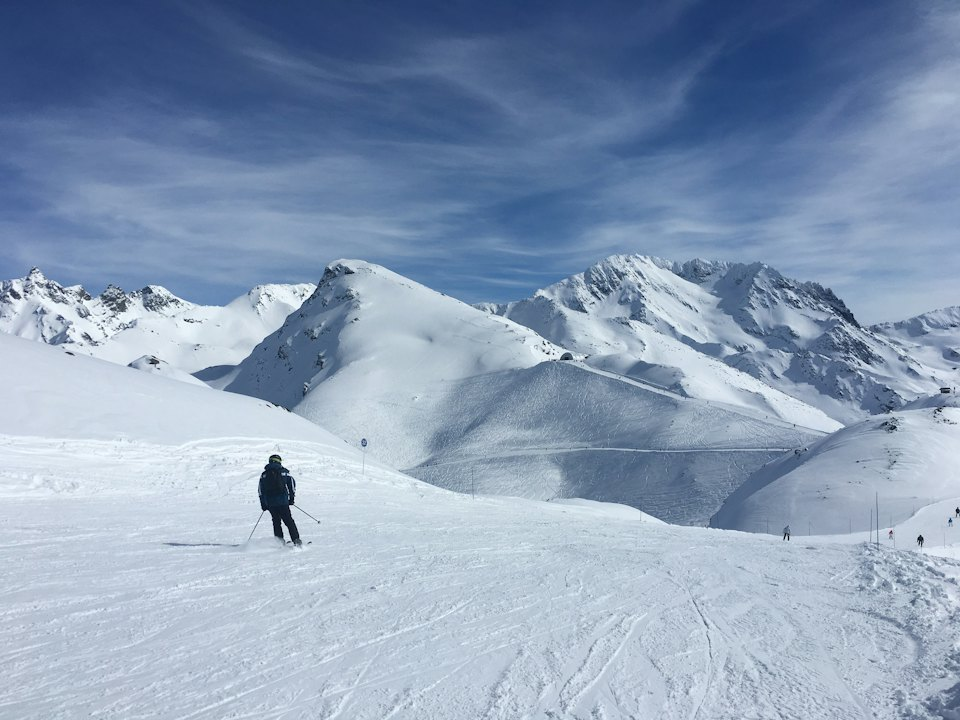
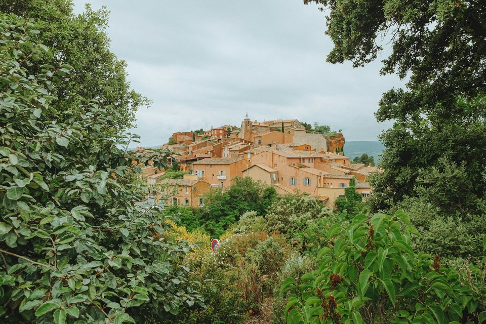

Le guide pratique pour visiter la France : quoi voir, comment y aller, quoi réserver.
Où aller, comment y aller, quoi réserver et les bons plans : des guides courts et pratiques pour visiter les plus beaux sites de France sans perdre de temps, de Paris à la Côte d’Azur et des Alpes à la Bretagne.
Photo : Léonard Cotte / Unsplash
Les régions

Paris 51 guidesParis se visite toute l’année, et l’hiver est même la meilleure saison pour les musées. Encore faut-il savoir ce qui se réserve, quel jour tout est fermé et à quelle heure passer.
 Côte d’Azur
45 guides
Côte d’Azur
45 guides
Villages perchés, îles à quinze minutes de la Croisette, ports de légende : la Riviera se visite très bien sans voiture, à condition de savoir où aller et quand.

Alpes 21 guidesGrands domaines reliés, villages de charme et sommets à plus de 3 000 mètres : la saison 2026-2027 commence dès le 21 novembre dans les stations les plus hautes.
 Pyrénées
5 guides
Pyrénées
5 guides
Font-Romeu, Saint-Lary, le Grand Tourmalet : des stations ensoleillées et plus abordables, ouvertes dès fin novembre 2026.
 Normandie
5 guides
Normandie
5 guides
Le Mont-Saint-Michel, les falaises d’Étretat, Honfleur et les plages du Débarquement : la grande escapade à quelques heures de Paris.
 Châteaux de la Loire
4 guides
Châteaux de la Loire
4 guides
Chambord, Chenonceau, Amboise et Villandry : les grands châteaux de la Renaissance, à deux heures de Paris.

Provence 9 guidesAvignon, Aix, Marseille, les calanques et les villages perchés : la Provence se visite toute l’année.
 Alsace
4 guides
Alsace
4 guides
Strasbourg, Colmar et les villages du vignoble : de fin novembre à fin décembre, les plus beaux marchés de Noël de France.
 Bretagne
6 guides
Bretagne
6 guides
Saint-Malo, Dinan, Carnac et la Côte de Granit Rose : remparts corsaires, menhirs et côtes sauvages, à visiter toute l’année.
 Pays basque
4 guides
Pays basque
4 guides
Biarritz, Saint-Jean-de-Luz, Bayonne et Espelette : surf, ports de pêche et villages blancs et rouges au pied de la Rhune.
 Aquitaine
12 guides
Aquitaine
12 guides
Bordeaux, Saint-Émilion, la dune du Pilat, Sarlat et les châteaux forts de la vallée de la Dordogne.
 Lot
3 guides
Lot
3 guides
Le gouffre de Padirac, Rocamadour et Saint-Cirq-Lapopie, entre causses et vallées.
 Corse
8 guides
Corse
8 guides
Ajaccio, Bastia, Bonifacio, Porto-Vecchio et les îles Lavezzi, entre citadelles et plages.
Idées pour cet hiver
-
 Où partir cet hiver
Où partir cet hiverNeige garantie en altitude, illuminations de Noël à Paris ou douceur méditerranéenne : l’hiver est une saison idéale pour voyager en France, à condition de bien choisir ses dates.
-
 Paris en hiver
Paris en hiverIlluminations, marchés de Noël, grandes expositions et musées en nocturne : l’hiver est une excellente saison pour visiter Paris, avec moins de monde dans les monuments.
-
 Côte d’Azur en hiver
Côte d’Azur en hiverMoins de monde, une lumière superbe et les grandes fêtes de février : l’hiver est la saison préférée des connaisseurs pour découvrir la Riviera.
-
 Ski : dates d’ouverture
Ski : dates d’ouvertureEnvie de skier tôt ? Voici les dates d’ouverture annoncées par les grandes stations des Alpes pour la saison 2026-2027, de la plus précoce à la plus tardive.
Les incontournables de Paris
-
 Tour Eiffel
Tour EiffelTrois étages, plus de 300 mètres et la vue la plus célèbre de Paris. La visite se prépare : billets officiels, bon créneau et, si vous avez les jambes, les escaliers.
-
 Louvre
LouvreLe plus grand musée du monde ne se visite pas en entier : il se prépare. Réservez votre créneau, choisissez trois ou quatre ailes et évitez le mardi, jour de fermeture.
-
 Notre-Dame
Notre-DameRouverte en décembre 2024 après l’incendie, la cathédrale a retrouvé sa pierre claire et sa lumière. L’entrée est gratuite ; réserver un créneau fait gagner beaucoup de temps.
-
 Montmartre
MontmartreUne colline de village au-dessus de Paris : escaliers, vignes, ateliers de peintres et, tout en haut, la basilique blanche du Sacré-Cœur.
-
 Musée d’Orsay
Musée d’OrsayMonet, Renoir, Van Gogh, Degas : la plus grande collection impressionniste du monde, dans une ancienne gare. La nocturne du jeudi est le meilleur moment pour y aller.
-
 Versailles
VersaillesLa galerie des Glaces, les appartements du Roi, les jardins de Le Nôtre et le domaine de Marie-Antoinette : une journée entière, à quarante minutes de Paris.
Les incontournables de la Côte d’Azur
-
 Nice
NiceLa capitale de la Riviera : une baie immense, une vieille ville aux façades ocre et des musées dignes des plus grandes villes.
-
 Monaco
MonacoDeux kilomètres carrés, un palais, un casino et l’un des plus beaux musées de la mer d’Europe. Monaco se visite à pied en une journée.
-
 Èze
ÈzeUn village médiéval accroché à son rocher, à plus de 400 mètres au-dessus de la mer. La vue depuis le jardin, tout en haut, justifie à elle seule la montée.
-
 Cannes
CannesBien plus qu’un festival : une vieille ville perchée, un marché provençal couvert et deux îles sauvages à un quart d’heure de bateau.
-
 Îles de Lérins
Îles de LérinsÀ un quart d’heure de bateau de la Croisette, deux îles sans voiture : des pins, des criques, un fort où fut enfermé le Masque de fer et une abbaye où vivent encore des moines.
-
 Saint-Tropez
Saint-TropezUn ancien village de pêcheurs devenu légende. Hors saison, Saint-Tropez redevient un petit port provençal ; en été, mieux vaut y arriver par la mer.
Voir les 38 guides de la Côte d’AzurLa Côte d’Azur en 3 jours
Les incontournables des Alpes
-
 Chamonix
ChamonixLa capitale de l’alpinisme, face au mont Blanc. On y vient pour skier, mais aussi pour monter à près de 3 900 mètres sans être alpiniste.
-
Val Thorens
À 2 300 mètres, Val Thorens est la plus haute station d’Europe. Elle ouvre la première et ferme la dernière : de fin novembre au début mai.
-
 Courchevel
CourchevelPistes damées au cordeau, altiport et grands hôtels : Courchevel est la station la plus prestigieuse des Alpes, mais aussi un excellent domaine pour tous les niveaux.
-
Megève
Un vrai village savoyard, des calèches dans les rues et des pistes boisées face au mont Blanc. Megève est la station chic et douce par excellence.